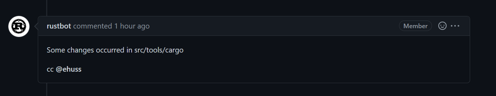
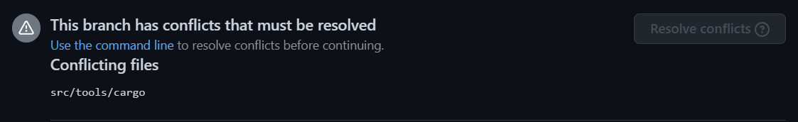
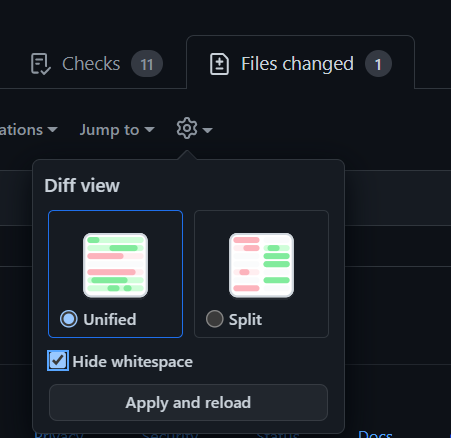
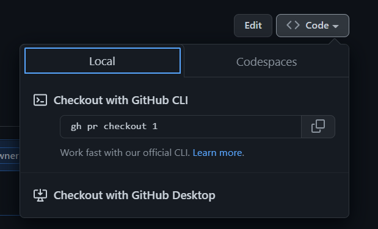

استفاده از Git
پروژهٔ Rust برای مدیریت کد منبع خود از Git استفاده میکند. برای مشارکت، باید کمی با قابلیتهای آن آشنا باشید تا تغییرات شما بتوانند در کامپایلر ادغام شوند.
هدف این صفحه پوشش برخی از رایجترین پرسشها و مشکلاتی است که مشارکتکنندگان تازهوارد با آنها روبهرو میشوند. هرچند برخی مبانی Git اینجا پوشش داده میشود، اگر دیدید این هنوز برایتان کمی سریع است، شاید بهتر باشد ابتدا مقدمههایی دربارهٔ Git بخوانید، مثل بخشهای Beginner و Getting started در این آموزش از Atlassian. GitHub هم مستندات و راهنماهایی برای مبتدیان دارد، یا میتوانید کتاب Git را که عمیقتر است مطالعه کنید.
این راهنما ناقص است. اگر با git مشکلی داشتید که این صفحه کمکی به آن نمیکند، لطفاً یک issue باز کنید تا بتوانیم نحوهٔ رفع آن را مستند کنیم.
Prerequisites
فرض میکنیم Git را نصب کردهاید، rust-lang/rust را fork کردهاید و مخزن forkشده را روی رایانهٔ خود clone کردهاید. ما از رابط خط فرمان برای کار با Git استفاده میکنیم؛ تعدادی GUI و یکپارچگی با IDE هم هست که عموماً همان کارها را انجام میدهند.
اگر fork خود را clone کردهاید، میتوانید در مخزن محلی خود با origin به آن ارجاع دهید.
شاید مفید باشد remoteای هم برای مخزن رسمی rust-lang/rust تنظیم کنید با
git remote add upstream https://github.com/rust-lang/rust.git
اگر از HTTPS استفاده میکنید، یا
git remote add upstream git@github.com:rust-lang/rust.git
اگر از SSH استفاده میکنید.
نکته: این صفحه به گردشکارهای rust-lang/rust اختصاص دارد، اما احتمالاً
هنگام مشارکت در مخازن دیگر پروژهٔ Rust هم مفید خواهد بود.
Standard Process
در ادامه روال عادیای آمده که احتمالاً برای بیشتر تغییرات کوچک و PRها بهکار میبرید:
- مطمئن شوید تغییرات را روی
mainاعمال میکنید:git checkout main. - آخرین تغییرات را از مخزن Rust بگیرید:
git pull upstream main --ff-only. (برای اطلاعات بیشتر دربارهٔ این، سیاست No-Merge را ببینید). - برای تغییر خود یک branch جدید بسازید:
git checkout -b issue-12345-fix. - چند تغییر در مخزن بدهید و آنها را تست کنید.
- تغییرات خود را با
git add src/changed/file.rs src/another/change.rsstage کنید و سپس باgit commitcommit کنید. البته commitهای میانی هم میتواند ایدهٔ خوبی باشد. ازgit add .پرهیز کنید، چون commit کردن ناخواستهٔ تغییراتی که نباید commit شوند، مثل بهروزرسانی زیرماژولها، را بسیار آسان میکند. میتوانید باgit statusبررسی کنید فایلی را stage نکردهاید. - تغییرات خود را به fork خود push کنید:
git push --set-upstream origin issue-12345-fix(پس از افزودن commitها میتوانید ازgit pushاستفاده کنید و پس از rebase یا pull-and-rebase میتوانید ازgit push --force-with-leaseاستفاده کنید). - از fork خود به شاخهٔ
mainدرrust-lang/rustیک PR باز کنید.
اگر مجبور به rebase شدید و با تعارضها روبهرو شدید، Rebase را ببینید. اگر میخواهید هنگام کار روی قابلیت/issue طولانیمدت بالادست را دنبال کنید، بهروز نگهداشتن را ببینید.
اگر بازبین شما تغییراتی درخواست کند، روال آن تغییرات تقریباً همین است، با حذف چند گام:
- مطمئن شوید تغییرات را روی جدیدترین نسخهٔ کد خود میدهید:
git checkout issue-12345-fix. - تغییرات اضافی خود را مثل قبل بدهید، stage کنید و commit کنید.
- آن تغییرات را به fork خود push کنید:
git push.
Troubleshooting git issues
اگر rust-lang/rust قدیمی است لازم نیست آن را از ابتدا clone کنید!
حتی اگر فکر میکنید آن را بیش از حد خراب کردهاید، راههایی برای رفع
وضعیت git هست که لازم نیست کل مخزن را دوباره دانلود کنید.
در ادامه چند مشکل رایج که ممکن است با آنها روبهرو شوید آمده است:
بهطور تصادفی یک merge commit ساختم.
Git دو راه برای بهروزکردن branch شما با جدیدترین تغییرات دارد: merge و rebase.
Rust از rebase استفاده میکند.
اگر merge commit ساختهاید، رفعش چندان سخت نیست: git rebase -i upstream/main.
برای اطلاعات بیشتر دربارهٔ rebase، Rebase را ببینید.
fork خود را در GitHub حذف کردم!
از دید git مشکلی نیست.
اگر git remote -v را اجرا کنید،
چیزی شبیه این میگوید:
$ git remote -v
origin git@github.com:jyn514/rust.git (fetch)
origin git@github.com:jyn514/rust.git (push)
upstream https://github.com/rust-lang/rust (fetch)
upstream https://github.com/rust-lang/rust (fetch)
اگر نام fork خود را تغییر دادهاید، میتوانید URL را اینطور تغییر دهید:
git remote set-url origin <URL>
که در آن <URL> نشانی fork جدید شماست.
بهطور تصادفی یک زیرماژول را تغییر دادم
معمولاً افراد وقتی متوجه میشوند که rustbot در GitHub کامنتی میگذارد که cargo تغییر کرده است:

ممکن است در رابط وب هم تعارضهایی ببینید:

رایجترین دلیل این است که پس از یک تغییر rebase کردهاید و بدون اجرای اولیهٔ
x برای بهروزکردن زیرماژولها git add . را زدهاید.
یا شاید بهجای x fmt دستور cargo fmt را اجرا کردهاید
و فایلهای درون زیرماژول را تغییر دادهاید و سپس تغییرات را commit کردهاید.
برای رفع آن این کارها را بکنید (اگر زیرماژولی غیر از cargo را تغییر دادهاید،
مسیر src/tools/cargo را با مسیر آن زیرماژول جایگزین کنید):
- ببینید کدام commit تغییرات تصادفی را دارد:
git log --stat -n1 src/tools/cargo - تغییرات آن commit را برگردانید:
git checkout <my-commit>~ src/tools/cargo. نویسهٔ~را دقیقاً بنویسید اما<my-commit>را با خروجی گام ۱ جایگزین کنید. - به git بگویید تغییرات را commit کند:
git commit --fixup <my-commit> - Repeat steps 1-3 for all the submodules you modified.
- اگر زیرماژول را در چند commit مختلف تغییر دادهاید، باید گامهای ۱ تا ۳ را
برای هر commit که تغییر دادهاید تکرار کنید.
وقتی دستور
git logcommitی را نشان داد که نویسندهاش شما نیستید، میفهمید باید متوقف شوید.
- اگر زیرماژول را در چند commit مختلف تغییر دادهاید، باید گامهای ۱ تا ۳ را
برای هر commit که تغییر دادهاید تکرار کنید.
وقتی دستور
- تغییرات خود را در commitهای موجود squash کنید:
git rebase --autosquash -i upstream/main - تغییرات خود را push کنید.
هنگام rebase پیام «error: cannot rebase» میبینم
این دو خطای رایج هنگام rebase هستند:
error: cannot rebase: Your index contains uncommitted changes.
error: Please commit or stash them.
error: cannot rebase: You have unstaged changes.
error: Please commit or stash them.
(برای تفاوت این دو https://git-scm.com/book/en/v2/Getting-Started-What-is-Git%3F#_the_three_states را ببینید.)
این یعنی از آخرین باری که commit کردهاید تغییراتی دادهاید. برای اینکه بتوانید rebase کنید، یا تغییرات خود را commit کنید، یا یک commit موقت به نام «stash» بسازید تا هنگام پایان rebase همچنان commit نشده باشند. ممکن است بخواهید git را طوری پیکربندی کنید که این «stash» را خودکار بسازد، که در تقریباً همهٔ موارد از خطای «cannot rebase» جلوگیری میکند:
git config --global rebase.autostash true
برای اطلاعات بیشتر دربارهٔ stash https://git-scm.com/book/en/v2/Git-Tools-Stashing-and-Cleaning را ببینید.
«Untracked Files: src/stdarch» میبینم؟
این باقیماندهٔ انتقال به پوشهٔ library/ است.
متأسفانه git rebase تغییر نام زیرماژولها را دنبال نمیکند، پس
باید پوشه را خودتان حذف کنید:
rm -r src/stdarch
I see <<< HEAD?
احتمالاً در میانهٔ rebase یا تعارض merge بودید.
برای رفع تعارض تعارضها را ببینید.
اگر به تغییرات اهمیتی نمیدهید
و فقط میخواهید یک نسخهٔ تمیز از مخزن را برگردانید، میتوانید از git reset استفاده کنید:
# WARNING: this throws out any local changes you've made! Consider resolving the conflicts instead.
git reset --hard main
failed to push some refs
git push درست کار نمیکند و چیزی شبیه این میگوید:
! [rejected] issue-xxxxx -> issue-xxxxx (non-fast-forward)
error: failed to push some refs to 'https://github.com/username/rust.git'
hint: Updates were rejected because the tip of your current branch is behind
hint: its remote counterpart. Integrate the remote changes (e.g.
hint: 'git pull ...') before pushing again.
hint: See the 'Note about fast-forwards' in 'git push --help' for details.
توصیهای که میدهد نادرست است!
بهدلیل سیاست «no-merge» در Rust، merge commitای که git pull میسازد
در PR نهایی مجاز نخواهد بود، علاوه بر اینکه هدف rebase را از بین میبرد!
بهجای آن از git push --force-with-lease استفاده کنید.
Git سعی دارد commitهایی را rebase کند که من ننوشتهام؟
اگر در فهرست rebase خود commitهای زیادی، یا merge commit، یا commitهایی از افراد دیگر که
خودتان ننوشتهاید میبینید، احتمالاً سعی میکنید روی branch اشتباه rebase کنید.
برای مثال، ممکن است
remote با نام upstream برای rust-lang/rust داشته باشید، اما git rebase origin/main را بهجای git rebase upstream/main اجرا کرده باشید.
رفع آن لغو rebase و استفاده از branch درست است:
git rebase --abort
git rebase --interactive upstream/main
برای دیدن مثالی از rebase روی branch اشتباه اینجا کلیک کنید
نکتهٔ سریع دربارهٔ زیرماژولها
هنگام بهروزکردن مخزن محلی با git pull، ممکن است گاهی ببینید
Git میگوید فایلهایی را تغییر دادهاید که هرگز ویرایششان نکردهاید.
برای مثال،
اجرای git status چیزی شبیه این میدهد (به اشاره به new commits دقت کنید):
On branch main
Your branch is up to date with 'origin/main'.
Changes not staged for commit:
(use "git add <file>..." to update what will be committed)
(use "git restore <file>..." to discard changes in working directory)
modified: src/llvm-project (new commits)
modified: src/tools/cargo (new commits)
no changes added to commit (use "git add" and/or "git commit -a")
اینها تغییر در فایلها نیستند: تغییر در زیرماژولها هستند (بعداً بیشتر). برای خلاصشدن از آنها:
git submodule update
برخی زیرماژولها در واقع لازم نیستند؛ برای مثال، اگر از download-ci-llvm استفاده میکنید لازم نیست src/llvm-project
checkout شود.
برای پرهیز از دریافت مداوم تاریخچهٔ آن، میتوانید از
git submodule deinit -f src/llvm-project استفاده کنید که از نمایش دوبارهٔ آن بهعنوان تغییریافته هم جلوگیری میکند.
Rebase و تعارضها
وقتی کد خود را بهصورت محلی ویرایش میکنید، تغییرات را روی نسخهای از rust-lang/rust میدهید که هنگام ساخت branch قابلیت شما وجود داشت. بنابراین هنگام ارسال PR ممکن است برخی تغییراتی که از آن زمان در rust-lang/rust داده شده با تغییرات شما تعارض داشته باشند. وقتی این رخ دهد، باید پیش از merge شدن تغییراتتان تعارضها را رفع کنید. برای این باید کار خود را روی rust-lang/rust rebase کنید.
Rebasing
برای rebase کردن branch قابلیت خود روی جدیدترین نسخهٔ branch با نام main
در rust-lang/rust، branch خود را checkout کنید و سپس این دستور را اجرا کنید:
git pull --rebase https://github.com/rust-lang/rust.git main
اگر با خطای زیر روبهرو شدید:
error: cannot pull with rebase: Your index contains uncommitted changes. error: please commit or stash them.یعنی کار commitنشدهای در درخت کاری خود دارید. در آن مورد، پیش از rebase دستور
git stashرا اجرا کنید و پس از rebase و رفع همهٔ تعارضهاgit stash pop.
وقتی branch را روی main rebase میکنید، همهٔ تغییرات branch شما
روی جدیدترین نسخهٔ main دوباره اعمال میشوند.
به عبارت دیگر، Git سعی میکند
وانمود کند تغییراتی که روی نسخهٔ قدیمی main دادید روی نسخهٔ جدید main داده شدهاند.
در این فرایند، باید انتظار داشته باشید دستکم یک «تعارض rebase» ببینید.
این وقتی رخ میدهد که تلاش Git برای
اعمال مجدد تغییرات شکست میخورد چون تغییرات شما با تغییرات دیگر تعارض داشته است.
میتوانید بفهمید این رخ داده چون در خروجی خطوطی شبیه این میبینید
CONFLICT (content): Merge conflict in file.rs
وقتی این فایلها را باز کنید، بخشهایی به این شکل میبینید
<<<<<<< HEAD
Original code
=======
Your code
>>>>>>> 8fbf656... Commit fixes 12345
این نشاندهندهٔ خطوطی از فایل است که Git نتوانسته بفهمد چگونه rebase کند.
بخش بین <<<<<<< HEAD و ======= کد
main را دارد، در حالی که طرف دیگر نسخهٔ کد شماست.
باید تصمیم بگیرید با تعارض چه کنید.
ممکن است بخواهید تغییرات خود را نگه دارید،
تغییرات main را نگه دارید، یا هر دو را ترکیب کنید.
عموماً رفع تعارض دو گام دارد: اول، تعارض مشخص را رفع کنید.
فایل را ویرایش کنید تا تغییرات دلخواه را بدهید و در این فرایند خطوط
<<<<<<<، ======= و >>>>>>> را حذف کنید.
دوم، کد اطراف را بررسی کنید.
اگر تعارضی بوده، احتمالاً چند خطای منطقی هم آن اطراف هست!
ایدهٔ خوبی است اینجا x check را اجرا کنید تا مطمئن شوید خطای آشکاری نیست.
وقتی رفع همهٔ تعارضها تمام شد، باید فایلهایی را که تعارض داشتند با git add stage کنید.
سپس git rebase --continue را اجرا کنید تا
به Git بگویید تعارضها را رفع کردهاید و باید rebase را تمام کند.
وقتی rebase موفق شد، میخواهید branch متناظر را در
fork خود با git push --force-with-lease بهروز کنید.
بهروز نگهداشتن
بخش بالا راهنمای مشخصی دربارهٔ rebaseکردن کار و برخورد با تعارضهای merge است. در اینجا نصیحتی عمومی دربارهٔ نگهداشتن مخزن محلی بهروز با تغییرات بالادست آمده است:
استفادهٔ منظم از git pull upstream main هنگامی که روی branch محلی main هستید آن را بهروز نگه میدارد.
شما باید branchهای قابلیت خود را هم بهروز نگه دارید.
پس از pull میتوانید branchهای قابلیت را checkout و rebase کنید:
git checkout main
git pull upstream main --ff-only # to make certain there are no merge commits
git rebase main feature_branch
git push --force-with-lease # (set origin to be the same as local)
برای پرهیز از merge طبق سیاست No-Merge، ممکن است بخواهید از
git config pull.ff only استفاده کنید (این پیکربندی فقط روی مخزن محلی اعمال میشود)
تا مطمئن شوید Git هنگام git pull هیچ merge commit نمیسازد، بدون
نیاز به دادن --ff-only یا --rebase هر بار.
میتوانید از main دستور git push --force-with-lease را هم بزنید تا دوباره بررسی کنید
branchهای قابلیت شما با وضعیتشان در GitHub همگاماند.
Advanced Rebasing
commitهای خود را squash کنید
«Squash»کردن commitها در یکدیگر باعث میشود آنها در یک commit ادغام شوند. هم مزیت و هم عیب این کار این است که تاریخچه را ساده میکند. از یک سو، ردپای گامهایی را که تغییرات در آنها داده شد از دست میدهید، اما کار با تاریخچه آسانتر میشود.
سادهترین راه squash کردن commitهای یک PR در مخزن rust-lang/rust استفاده از دستور @bors squash در کامنت روی PR است.
بهطور پیشفرض، bors همهٔ پیامهای commit در PR را در پیام commit ادغامشده ترکیب میکند.
برای سفارشیکردن پیام commit از @bors squash msg="<commit message>" استفاده کنید.
برای مثال، @bors squash msg="Improve diagnostics for missing lifetime parameter".
اگر میخواهید commitها را با عملیات محلی git squash کنید، در ادامه بخوانید.
اگر تعارضی نیست و فقط برای تمیزکردن تاریخچه squash میکنید،
از git rebase --interactive --keep-base main استفاده کنید.
این نقطهٔ انشعاب PR شما را یکسان نگه میدارد و بازبینی diff آنچه در طول rebaseها رخ داده را آسانتر میکند.
squashکردن میتواند بهعنوان بخشی از رفع تعارض هم مفید باشد.
اگر branch شما چند بازنویسی متوالی از همان کد دارد، یا اگر
تعارضهای rebase بسیار شدیدند، میتوانید از
git rebase --interactive main برای کنترل بیشتر بر فرایند استفاده کنید.
این به شما اجازه میدهد commitها را رد کنید، commitهایی را که رد نمیکنید ویرایش کنید،
ترتیب اعمال آنها را تغییر دهید، یا آنها را در هم «squash» کنید.
یا میتوانید تاریخچهٔ commit را اینطور فدا کنید:
# squash all the changes into one commit so you only have to worry about conflicts once
git rebase --interactive --keep-base main # and squash all changes along the way
git rebase main
# fix all merge conflicts
git rebase --continue
ممکن است بخواهید فقط چند commit آخر را با هم squash کنید، شاید
چون فقط «fixup» هستند و تغییر واقعی نیستند.
برای مثال،
git rebase --interactive HEAD~2 به شما اجازه میدهد فقط آن دو commit را ویرایش کنید.
git range-diff
پس از تکمیل rebase و پیش از push تغییرات، ممکن است بخواهید
تغییرات بین branch قدیمی و جدید خود را بازبینی کنید.
میتوانید این کار را با git range-diff main @{upstream} HEAD بکنید.
اولین آرگومان range-diff، یعنی main در این مورد، revision پایهای است
که branch قدیمی و جدید را با آن مقایسه میکنید.
آرگومان دوم
نسخهٔ قدیمی branch شماست؛ در این مورد، @upstream یعنی نسخهای که
به GitHub push کردهاید، که همان چیزی است که افراد در pull request شما میبینند.
در نهایت آرگومان سوم range-diff نسخهٔ جدید
branch شماست؛ در این مورد HEAD است، یعنی commitی که فعلاً
در مخزن محلی شما checkout شده است.
توجه کنید که میتوانید از شکل کوتاهشدهٔ معادل git range-diff main @{u} HEAD هم استفاده کنید.
برخلاف diffهای عادی Git، در خروجی range-diff میبینید - یا + کنار - یا + دیگری هست.
نشانگر سمت چپ تغییر بین
branch قدیمی و جدید را نشان میدهد، و نشانگر سمت راست تغییری را که commit کردهاید.
پس میتوانید range-diff را «diff از diffها» ببینید چون
تفاوتهای بین diff قدیمی و diff جدید شما را نشان میدهد.
در ادامه مثالی از خروجی git range-diff آمده است (برگرفته از مستندات Git):
-: ------- > 1: 0ddba11 Prepare for the inevitable!
1: c0debee = 2: cab005e Add a helpful message at the start
2: f00dbal ! 3: decafe1 Describe a bug
@@ -1,3 +1,3 @@
Author: A U Thor <author@example.com>
-TODO: Describe a bug
+Describe a bug
@@ -324,5 +324,6
This is expected.
-+What is unexpected is that it will also crash.
++Unexpectedly, it also crashes. This is a bug, and the jury is
++still out there how to fix it best. See ticket #314 for details.
Contact
3: bedead < -: ------- TO-UNDO
(توجه کنید که خروجی git range-diff در ترمینال شما احتمالاً از این مثال خواناتر است چون
رنگ دارد.)
ویژگی دیگر git range-diff این است که برخلاف git diff، پیامهای commit را هم diff میکند.
این ویژگی هنگام اصلاح چند پیام commit میتواند مفید باشد تا مطمئن شوید بخشهای درست را تغییر دادهاید.
git range-diff دستور بسیار مفیدی است، اما توجه کنید ممکن است کمی طول بکشد
تا به قالب خروجی آن عادت کنید.
ممکن است مستندات Git دربارهٔ این
دستور را هم مفید بیابید، بهویژه بخش «Examples» آن.
No-Merge Policy
مخزن rust-lang/rust از چیزی استفاده میکند که «گردشکار rebase» نامیده میشود.
یعنی merge commit در PRها پذیرفته نمیشود.
در نتیجه، اگر بهصورت محلی
git merge اجرا میکنید، احتمال زیاد باید بهجای آن rebase کنید.
البته این همیشه درست نیست؛ اگر merge شما فقط fast-forward باشد،
مثل mergeهایی که git pull معمولاً انجام میدهد، آنگاه merge commit
ساخته نمیشود و جای نگرانی نیست.
اجرای یکبارهٔ git config merge.ff only (این پیکربندی روی مخزن محلی اعمال میشود)
تضمین میکند همهٔ mergeهایی که انجام میدهید از این نوع باشند و
نتوانید اشتباه کنید.
دلایل متعددی برای این تصمیم هست، و مثل همهٔ تصمیمها یک بدهبستان است. مزیت اصلی تاریخچهٔ commit عموماً خطی است. این bisectکردن را بسیار ساده میکند و فهم و دنبالکردن تاریخچه و لاگ commitها را بسیار آسانتر میکند.
نکاتی برای بازبینی
نکته: این بخش برای بازبینی PRهاست، نه نوشتن آنها.
Hiding whitespace
GitHub دکمهای برای غیرفعالکردن تغییرات فاصلهگذاری دارد که ممکن است مفید باشد.
میتوانید از git diff -w origin/main هم برای دیدن تغییرات بهصورت محلی استفاده کنید.

Fetching PRs
برای checkout کردن PRها بهصورت محلی میتوانید از git fetch upstream pull/NNNNN/head && git checkout FETCH_HEAD استفاده کنید.
همچنین میتوانید از ابزار خط فرمان GitHub استفاده کنید. GitHub روی PRها دکمهای نشان میدهد که میتوانید دستور checkout محلی را از آن کپی و paste کنید. برای اطلاعات بیشتر https://cli.github.com/ را ببینید.

استفاده از GitHub dev
بهعنوان جایگزین رابط وب GitHub، GitHub Dev ویرایشگر مبتنی بر وب برای مرور
مخزن و PRها فراهم میکند.
میتوان آن را با جایگزینکردن github.com با github.dev در URL
یا با زدن . در یک صفحهٔ GitHub باز کرد.
برای جزئیات بیشتر مستندات ویرایشگر github.dev را ببینید.
جابهجایی بخشهای بزرگ کد
نمای diff پیشفرض Git و GitHub برای جابهجاییهای بزرگ درون یک فایل بسیار ضعیف است؛ هر خط را حذفشده و هر خط را اضافهشده نشان میدهد و شما را مجبور میکند هر خط را خودتان مقایسه کنید. Git گزینهای دارد که خطوط جابهجاشده را با رنگ دیگری نشان میدهد:
git log -p --color-moved=dimmed-zebra --color-moved-ws=allow-indentation-change
برای اطلاعات بیشتر مستندات --color-moved را ببینید.
range-diff
بخش مربوطه برای نویسندگان PR را ببینید. این میتواند برای مقایسهٔ کدی که force-push شده مفید باشد تا مطمئن شوید تغییرات غیرمنتظرهای نیست.
نادیدهگرفتن تغییرات فایلهای مشخص
بسیاری از فایلهای بزرگ در مخزن خودکار تولید میشوند. برای دیدن diffی که تغییرات آن فایلها را نادیده میگیرد، میتوانید از نحو زیر استفاده کنید (مثلاً Cargo.lock):
git log -p ':!Cargo.lock'
الگوهای دلخواه پشتیبانی میشوند (مثلاً :!compiler/*). الگوها همان نحو
.gitignore را دارند، با : در ابتدا برای نشاندادن الگو.
Git submodules
نکته: دانستن زیرماژولها چیز خوبی است، اما پیشنیاز مطلق
مشارکت در rustc نیست.
اگر برای اولین بار از Git استفاده میکنید،
شاید بخواهید پیش از خواندن این بخش با مفاهیم اصلی Git آشنا شوید.
مخزن rust-lang/rust از زیرماژولهای Git برای استفاده از پروژههای دیگر Rust
درون مخزن rust بهره میگیرد.
نمونهها شامل fork مربوط به Rust از
llvm-project، cargo و کتابخانههایی مثل stdarch و backtrace است.
آن پروژهها در مخزن Git (و GitHub) جداگانهای توسعه و نگهداری میشوند و
تاریخچه/commitها، issue tracker و PRهای خودشان را دارند.
زیرماژولها به ما اجازه میدهند نوعی زیرمخزن تعبیهشده درون مخزن
rust بسازیم و آنها را مثل پوشههایی در مخزن rust بهکار ببریم.
llvm-project را مثال بزنید.
llvm-project در مخزن rust-lang/llvm-project نگهداری میشود،
اما در rust-lang/rust توسط کامپایلر برای تولید کد و بهینهسازی استفاده میشود.
ما آن را بهعنوان زیرماژول در پوشهٔ src/llvm-project به rust میآوریم.
محتوای زیرماژولها توسط Git نادیده گرفته میشود: زیرماژولها از نظر معنایی از بقیهٔ مخزن ایزولهاند.
اما اگر cd src/llvm-project کنید و سپس git status را اجرا کنید:
HEAD detached at 9567f08afc943
nothing to commit, working tree clean
تا جایی که git مطلع است، دیگر در مخزن rust نیستید، بلکه در مخزن llvm-project هستید.
متوجه میشوید در وضعیت «detached HEAD» هستیم، یعنی روی یک branch نیستیم بلکه روی
commit مشخصی هستیم.
دلیلش این است که مثل هر وابستگی، میخواهیم بتوانیم کنترل کنیم از کدام نسخه استفاده میشود.
زیرماژولها دقیقاً همین را ممکن میکنند: هر زیرماژول به یک commit مشخص «سنجاق» شده است
و تغییر نمیکند مگر دستی تغییر داده شود.
اگر در پوشهٔ llvm-project از git checkout <commit> استفاده کنید
و به پوشهٔ rust برگردید، میتوانید این
تغییر را مثل هر تغییر دیگری stage کنید، مثلاً با git add src/llvm-project. (توجه کنید اگر
تغییر را برای commit stage نکنید، خطر این هست که اجرای
x با بازگرداندن به commit قبلی هنگام «بهروزرسانی» خودکار زیرماژولها تغییر شما را خنثی کند.)
این انتخاب نسخه معمولاً توسط نگهدارندگان پروژه انجام میشود و شبیه این است.
عادتکردن به زیرماژولهای Git کمی زمان میبرد، پس اگر هنوز کاملاً روشن نیست نگران نباشید. بهندرت مجبور میشوید مستقیماً از آنها استفاده کنید و باز هم، لازم نیست همهچیز را دربارهٔ زیرماژولها بدانید تا در Rust مشارکت کنید. فقط بدانید که وجود دارند و با نوعی وابستگی زیرمخزن تعبیهشده متناظرند که Git میتواند بهخوبی و نسبتاً راحت برایمان مدیریت کند.
Hard-resetting submodules
گاهی ممکن است (هنگام اجرای git status) با این روبهرو شوید
Changes not staged for commit:
(use "git add <file>..." to update what will be committed)
(use "git restore <file>..." to discard changes in working directory)
(commit or discard the untracked or modified content in submodules)
modified: src/llvm-project (new commits, modified content)
و وقتی سعی میکنید git submodule update را اجرا کنید با خطاهایی مثل این بهشدت میشکند
error: RPC failed; curl 92 HTTP/2 stream 7 was not closed cleanly: CANCEL (err 8)
error: 2782 bytes of body are still expected
fetch-pack: unexpected disconnect while reading sideband packet
fatal: early EOF
fatal: fetch-pack: invalid index-pack output
fatal: Fetched in submodule path 'src/llvm-project', but it did not contain 5a5152f653959d14d68613a3a8a033fb65eec021. Direct fetching of that commit failed.
اگر (new commits, modified content) دیدید میتوانید اجرا کنید
git submodule foreach git reset --hard
و سپس دوباره git submodule update را امتحان کنید.
Deinit git submodules
اگر آن هم کار نکرد، میتوانید همهٔ زیرماژولهای git را deinit کنید…
git submodule deinit -f --all
متأسفانه گاهی پیکربندی زیرماژولهای git محلی شما به هر دلیلی کاملاً بههم میریزد.
Overcoming fatal: not a git repository: <submodule>/../../.git/modules/<submodule>
گاهی، به دلیلی نامعلوم، ممکن است با این روبهرو شوید
fatal: not a git repository: src/gcc/../../.git/modules/src/gcc
در این وضعیت، برای مسیر زیرماژول دادهشده، یعنی <submodule_path> = src/gcc در این مثال، باید:
rm -rf <submodule_path>/.gitrm -rf .git/modules/<submodule_path>/config- اگر بهنحوی قفل
.gitconfigیتیم ماندهrm -rf .gitconfig.lockرا اجرا کنید.
سپس کاری مثل ./x fmt را انجام دهید تا bootstrap checkout زیرماژولها را برایتان مدیریت کند.
Ignoring commits during git blame
برخی commitها تغییرات بزرگ قالببندی دارند که در غیر این صورت عملکرد را تغییر نمیدهند.
میتوان از طریق
.git-blame-ignore-revs به git blame دستور داد آنها را نادیده بگیرد:
git blameرا طوری پیکربندی کنید که از.git-blame-ignore-revsبهعنوان فهرست commitهای نادیدهگرفتهشده استفاده کند:git config blame.ignorerevsfile .git-blame-ignore-revs- commitهای مناسبی را که میخواهید
git blameنادیده بگیرد اضافه کنید.
لطفاً برای commitی که به .git-blame-ignore-revs اضافه میکنید کامنتی بگذارید تا افراد
بهآسانی بفهمند چرا commit نادیده گرفته میشود.